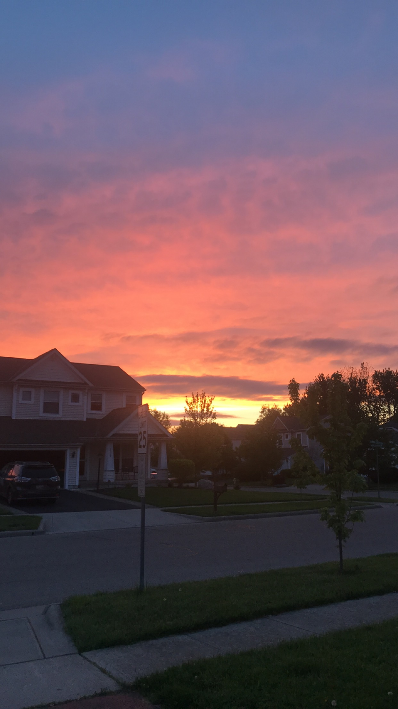
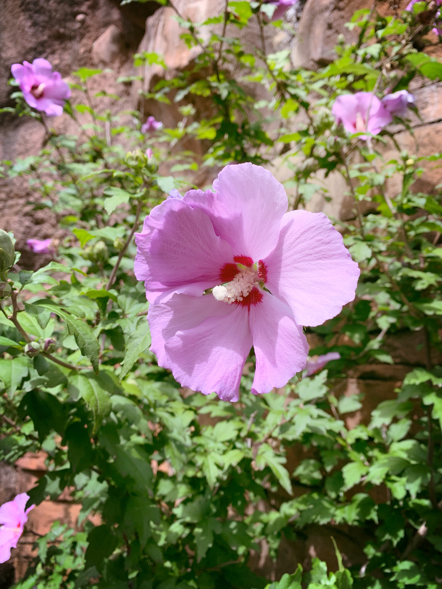
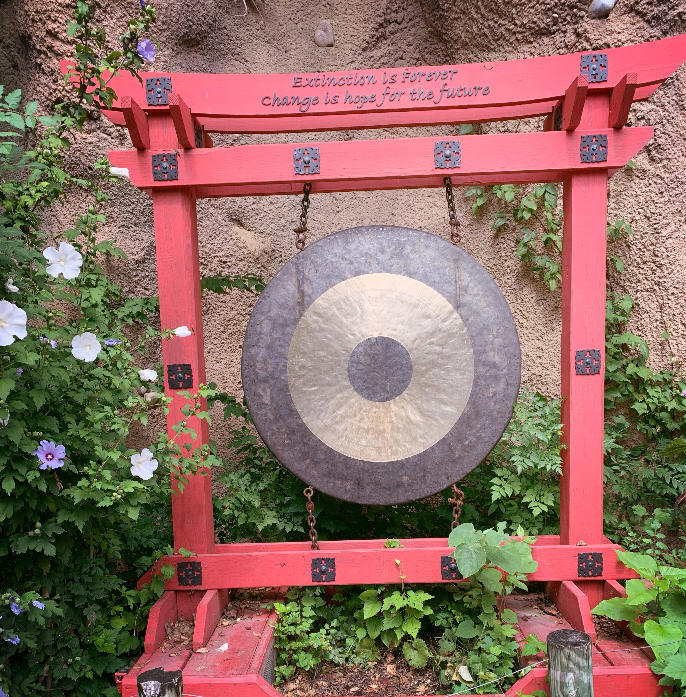
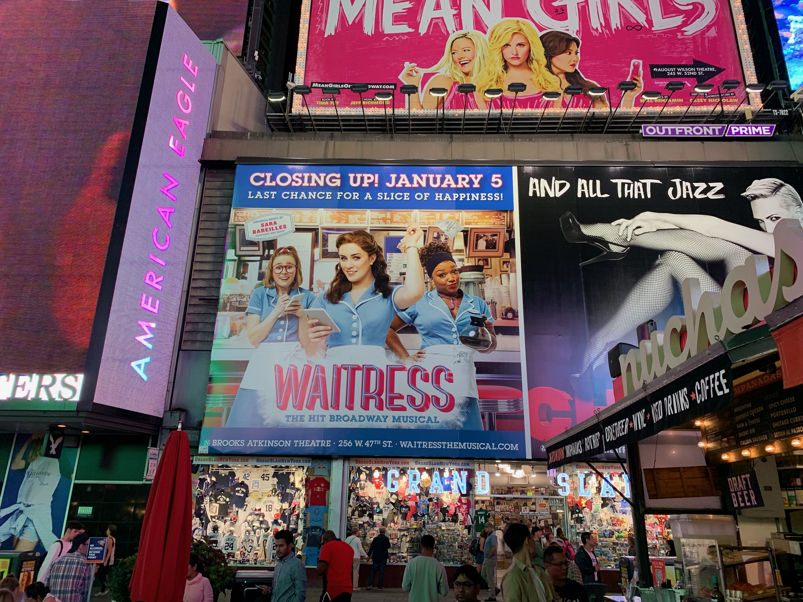
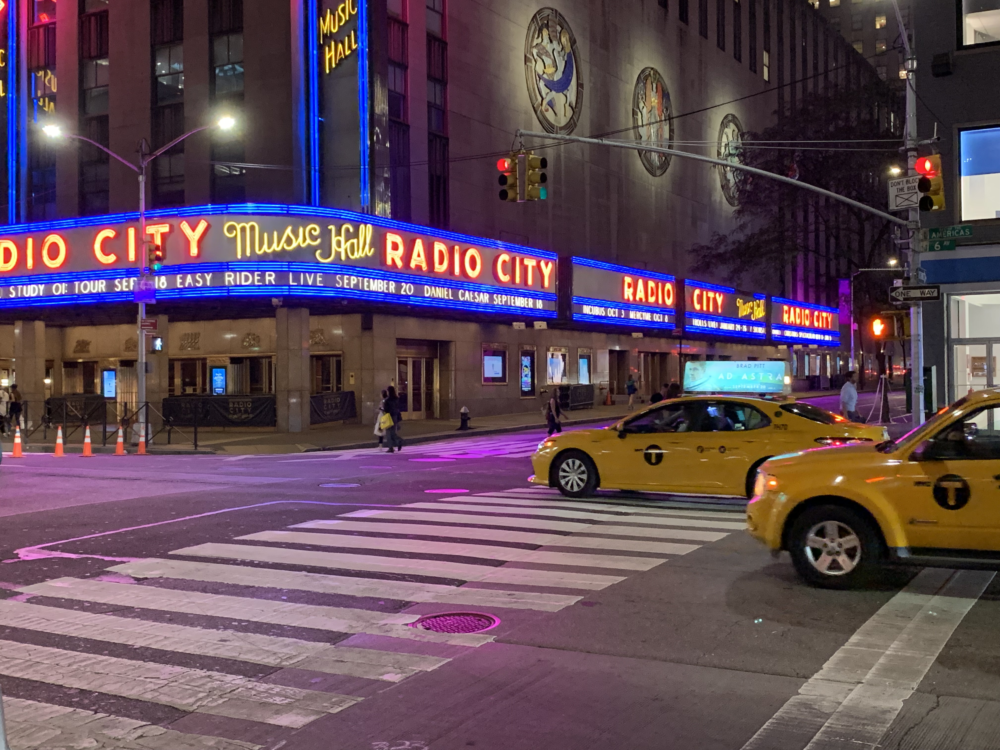

Here are a few examples by me
This picture was one of my earliest pictures and it still is one of my favorites. It was taken about a year ago, in 2018. When I look at the picture it makes me feel calm and at peace.

These next two pictures are from the day I traveled to the Zoo. The flowers during this time of year are beautiful and I felt the need to capture them.

The next two pictures are from New York City. The colors there are so bright and vibrent. It's crazy to see so much color in a city when night comes around. Picture credit: John Harbert